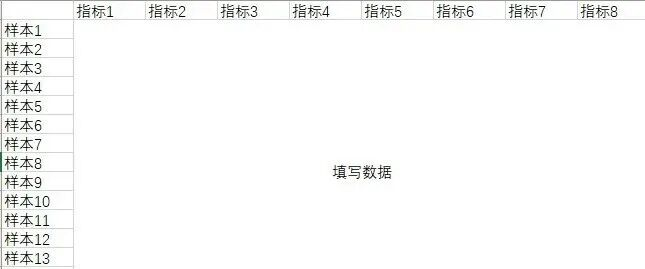
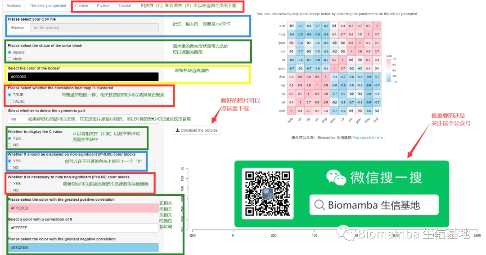
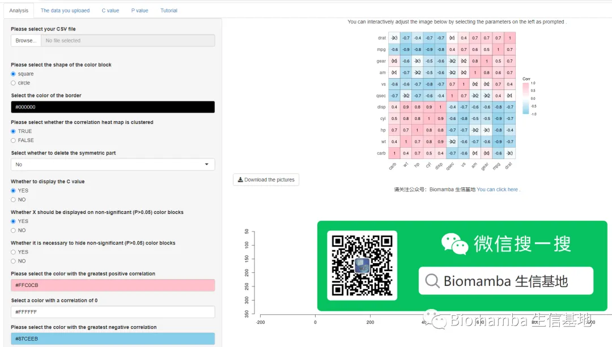

在线相关性分析App
原文：https://mp.weixin.qq.com/s?__biz=MzAwMzIzOTk5OQ==&mid=2247504403&idx=2&sn=e7f70b907eb90a24a60aad6dfdb70afb&chksm=9b3cab43ac4b2255b70a3dfc40ac2c9efc0211fc2bd6ae66a67a3c5879872d0488cc4ac4445e#rd 合集：在线工具
往期回顾

给你安排一个懂生信的工具人（一）：火山图 给你安排一个懂生信的工具人（二）：真-工具人给你安排一个懂生信的工具人（三）：凌波微课开发的在线版metacoder给你安排一个懂生信的工具人（四）：ggplot2"作弊器" 给你安排一个懂生信的工具人（五）：手把手教你用在线 pheatmap 绘制热图 给你安排一个懂生信的工具人（六）：再也不怕装不上packages了
“给你安排一个懂生信的工具人”这个系列我们一直致力于给大家制作 或分享一些去代码化的生信工具，以方便非生信专业的科研人员将科研时间集中花费在生物学问题上。学习的同时也欢迎大家关注公众号“Biomamba 生信基地”：
图文教程
首先，你需要先掌握相关性分析的基本概念： 一文搞定相关性分析 最好再有一些热图绘制的基础：给你安排一个懂生信的工具人（五）：手把手教你用在线 pheatmap 绘制热图三行命令搞定热图 热图绘制2.0
另外，你需要将你的文件转换为csv文件：

根据下面的提示应该就可以操作啦，记住，上传的一定得是csv文件！

视频课
csv文件准备
相关性热图在线工具
在线工具地址

https://biomamba-online-tools.shinyapps.io/ggcorrplot-online/?_ga=2.191241134.52306286.1639839205-531180260.1630374141
下一讲内容预告：
此前我们发布过一篇教大家如何进行统计推断的帖子：知识都还给统计老师了怎么办？在本系列的下一次推送中我们预计会为大家带来一个可以在线进行统计推断并进行差异分析的网页工具。敬请期待！！！
本公众号内的所有视频也会在B站同步播出：https://www.bilibili.com/video/BV1334y197Pw?p=3。

如何联系我们

 公众号后台消息更新不及时，超过48h便不许回复读者消息，这里给大家留一下领取资料及免费服务器(有root权限的共享服务器)的微信号 ，方便各位随时交流、提建议（科研任务繁重，回复不及时请见谅）。此外呼声一直很高的交流群 也建好了，欢迎大家入群讨论：
公众号后台消息更新不及时，超过48h便不许回复读者消息，这里给大家留一下领取资料及免费服务器(有root权限的共享服务器)的微信号 ，方便各位随时交流、提建议（科研任务繁重，回复不及时请见谅）。此外呼声一直很高的交流群 也建好了，欢迎大家入群讨论：
大家可以阅读完这几篇之后添加给生信入门初学者的小贴士 如何搜索公众号过往发布内容

 您点的每个赞和在看，我都认真当成了喜欢
您点的每个赞和在看，我都认真当成了喜欢